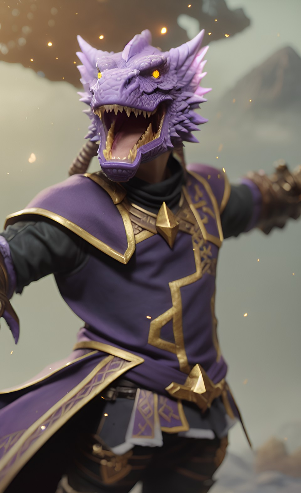

About me!
My name is Quasar. With the indomitable energy that burns in the heart of our stars, I have pursued beauty in all things. And with a sense of inevitability, I have found it. The saccharine seduction of the sublime yearns to reach beyond the bounds of my body, through my thaumaturgical thoughts. I relinquish my grasp on the mundane and wash away, dissolving into the profundity of the unknown. In this miasma of transcendence, I Spoke, and Time broke.
To fix it, I'll need your help. Travel to the Multiverse. Join the Journey.